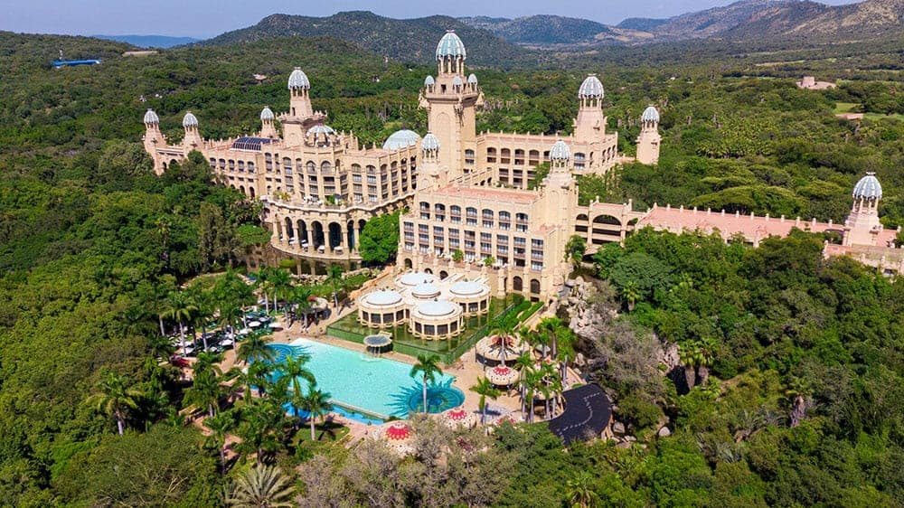
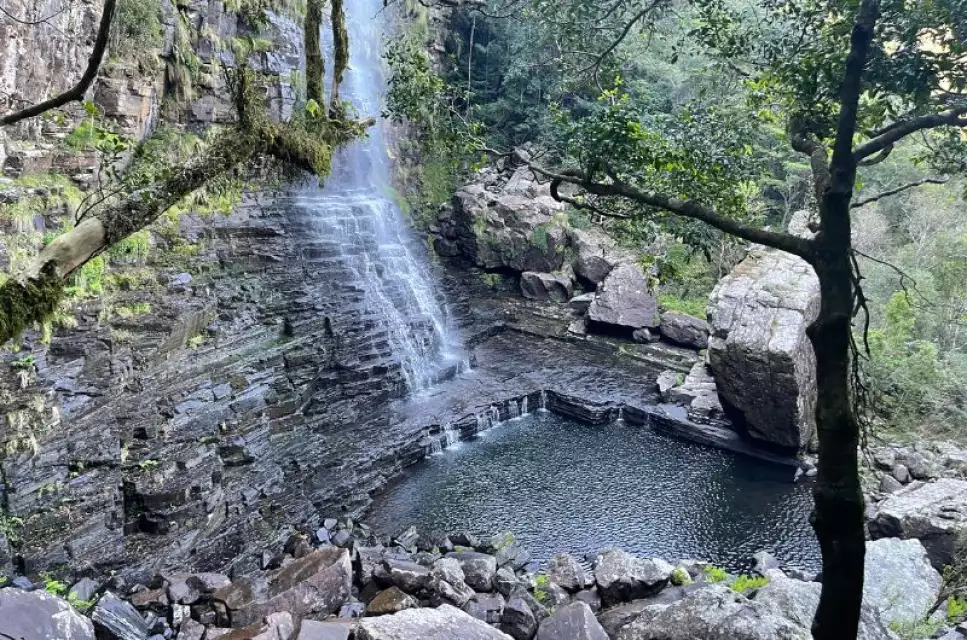
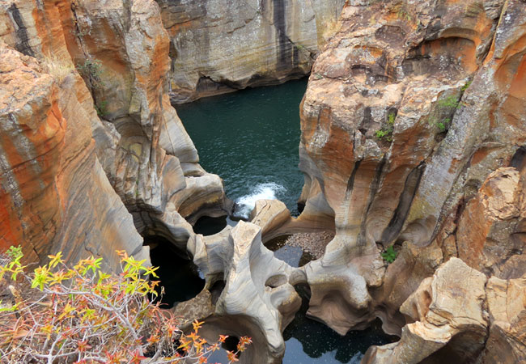
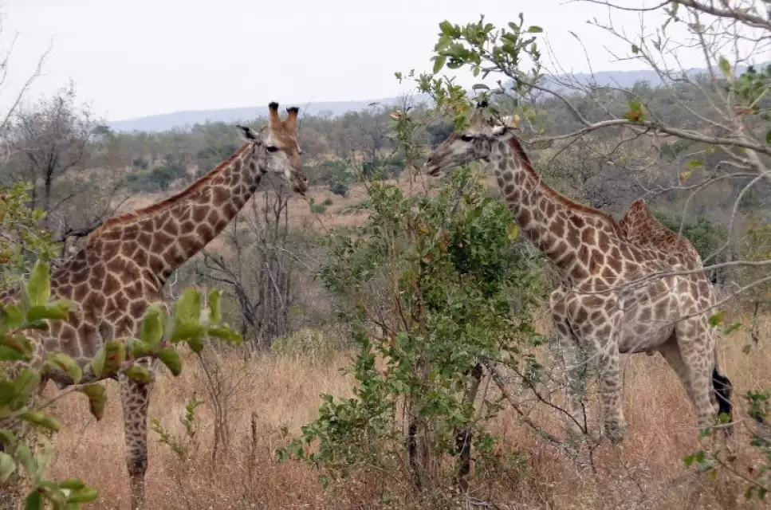
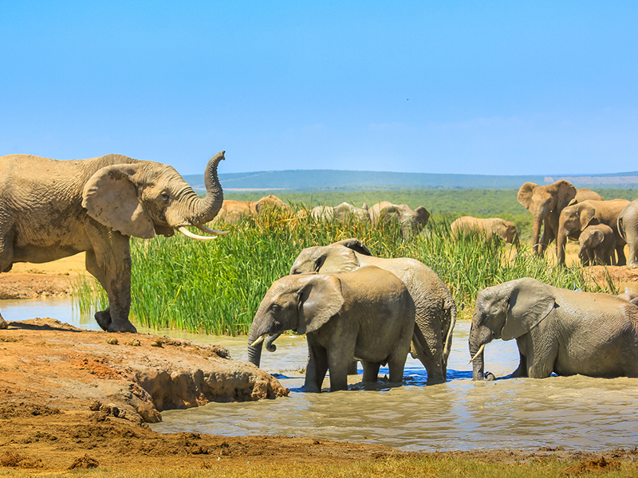
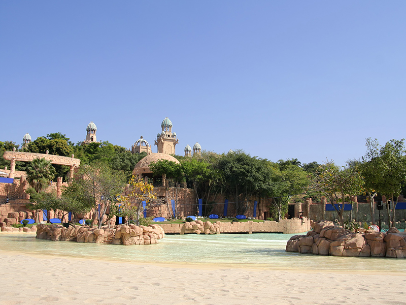
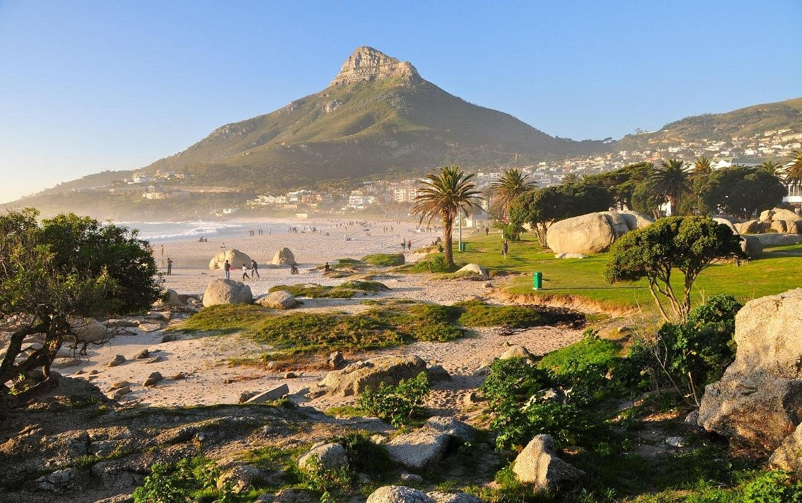
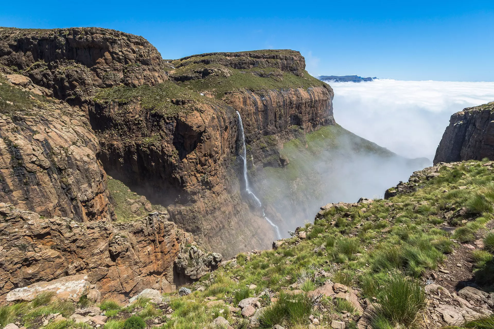
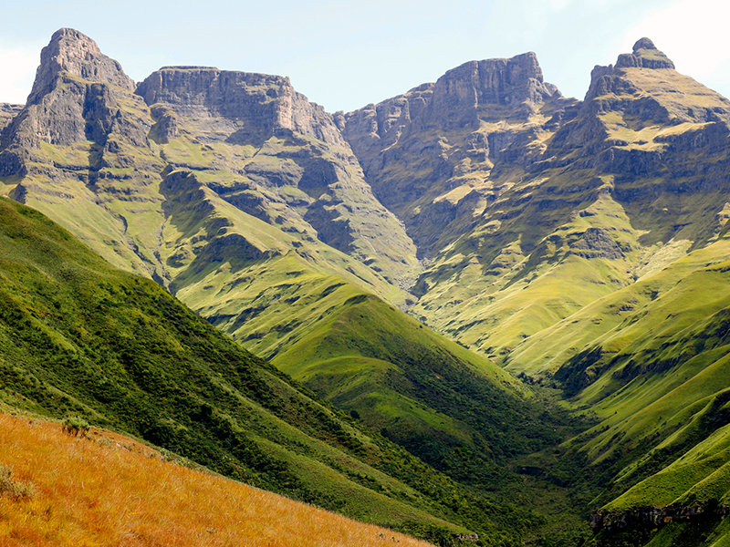
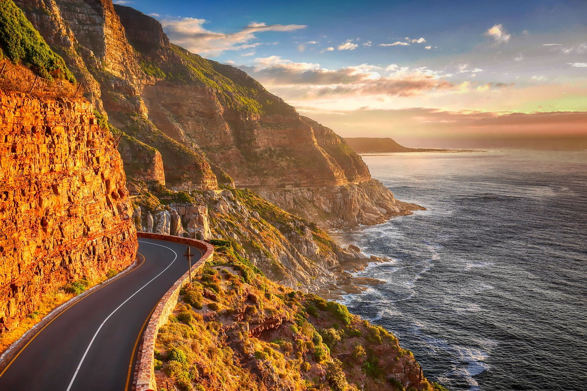

Why South Africa?
Travel destinations to explore
South Africa is a country worth exploring because of its incredible natural beauty and diverse landscapes. Visitors can experience beautiful beaches, mountains, forests, wildlife reserves, and breathtaking views all within one country. From the scenic coastline to the famous national parks, South Africa offers many opportunities for adventure, relaxation, and photography.
Another reason to explore South Africa is its rich and diverse culture. The country is often called the Rainbow Nation because of its many different cultures, languages, traditions, and communities. Exploring South Africa allows people to experience different foods, music, languages, and cultural celebrations while learning more about the country's history and people. South Africa is also an exciting destination for wildlife lovers. The country is home to some of the world's most famous animals, including lions, elephants, rhinos, leopards, and buffaloes. Visitors can enjoy safaris and nature experiences while seeing wildlife in beautiful natural environments.
DESTINATIONS
My favorite destinations in South Africa

Motitsi Waterfalls
Don’t miss the chance to visit Graskop Gorge—a natural wonder that has been upgraded by human hands and built up into an adrenaline and educational hub (think elevator that takes you down into the gorge). Not only did I see the waterfalls on my thrilling zipline ride, but my favorite part was the gorgeous 1-hour-long Afromontane forest walk that took us straight to the waterfall’s base.
Address:
R533 (road towards Hazyview), Graskop, 1270, Mpumalanga, South Africa
What I like about it
What I like most about Motitsi Falls in Mpumalanga is its beautiful natural scenery and peaceful atmosphere. The waterfall is surrounded by lush greenery and a beautiful forest, making it a perfect place to relax and connect with nature. I also enjoy the breathtaking views and the opportunity to walk through the gorge and experience the beauty of the waterfall up close. Motitsi Falls is special because it combines nature, adventure, and beautiful scenery, making it an unforgettable place to visit in Mpumalanga.

Bourke’s Potholes
Bourke’s Potholes is one of the natural spots that you can see in South Africa, where you just rock up to and let yourself be amazed. It’s a great bang for your buck! Burke’s Luck Potholes is part of the Panorama Route in the northeast of the country. It’s a series of cylindrical rock formations formed by centuries of the river water swirling away. The force of the water, coupled with abrasive sand and rocks, carved these magnificent potholes into the bedrock. You can walk along the wooden walkways and bridges to stare at the potholes from all angles.
Address:
Blyde River Canyon Nature Reserve, Moremela
What I like about it
What I like about Bourke’s Luck Potholes is their unique and fascinating natural beauty. The unusual rock formations, shaped over many years by flowing water, make the area look spectacular. I also enjoy the beautiful views of the rivers, deep pools, and surrounding landscape.

Kruger National Park
Kruger National Park is one of South Africa’s most famous wildlife destinations and is located across the provinces of Mpumalanga and Limpopo. The park is known for its incredible wildlife, including the Big Five: lions, elephants, leopards, rhinos, and buffaloes. Visitors can enjoy game drives, beautiful landscapes, and the opportunity to experience nature in its natural environment. Kruger National Park attracts visitors from around the world and is an important place for wildlife conservation and tourism.
Address:
the northeastern corner of South Africa
What I like about it
What I like about the Kruger National Park is the opportunity to see a variety of wild animals in their natural habitat. I enjoy the excitement of spotting animals such as lions, elephants, giraffes, and zebras while exploring the beautiful landscapes. The peaceful atmosphere and natural beauty of the park make it a special and enjoyable place to visit. I also like that Kruger National Park allows people to appreciate and learn about South Africa’s amazing wildlife.
Gallery
My Travel Photos





